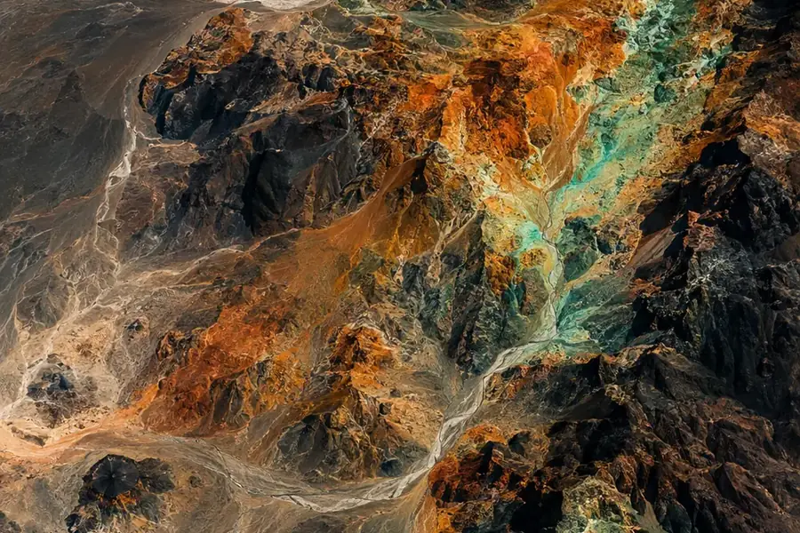

01 · Territorio
Análisis geoespacial predictivo
Imágenes satelitales, datos geológicos y machine learning para apoyar la exploración, la estimación de recursos y el monitoreo de taludes.
GanasDecidir dónde y cómo intervenir, con menor riesgo.
Evaluarlo en el diagnóstico